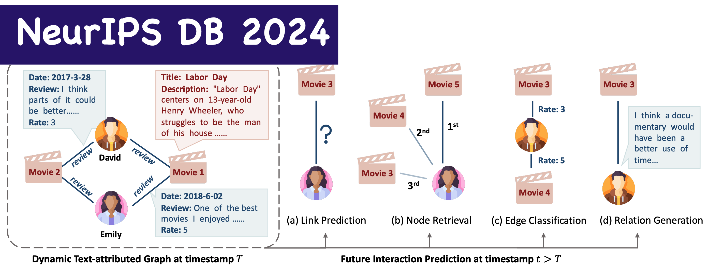
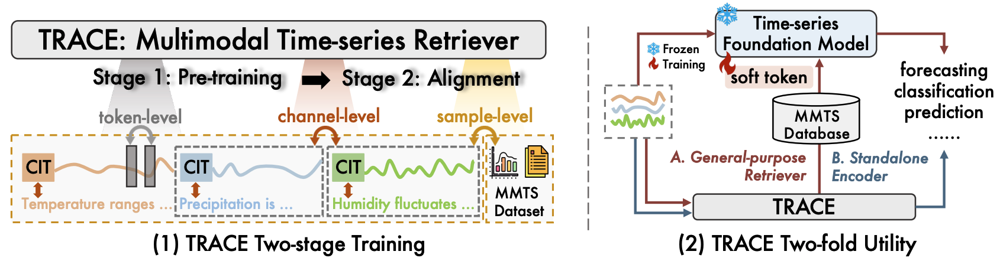
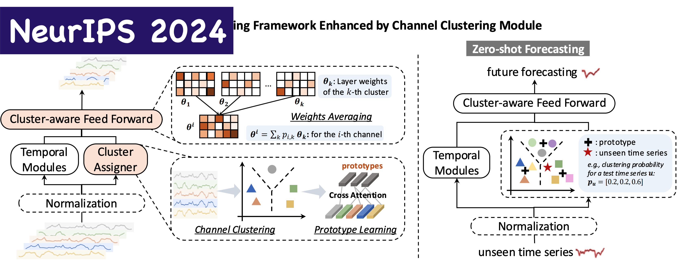

|
I am a computer science Ph.D. student at Yale University advised by Professor Rex Ying.
Before that, I obtained my B.S. degree at Shanghai Jiao Tong University (SJTU) in 2022. I majored in mathematics and applied mathematics (Zhiyuan Honors Program).
I am generally interested in Large Language Models (LLMs) with a focus on enabling reliable reasoning over complex, structured, and dynamic data, including:
- Developing scalable foundation models with inductive biases for graph, relational, and structured data, moving beyond sequence-only architectures
- Designing efficient structured Retrieval-Augmented Generation (RAG) and tool-integrated reasoning systems for multi-hop and decision-critical tasks
- Exploring post-training strategies to improve faithfulness, calibration, and robustness
- Advancing LLM capabilities in temporal reasoning and time-series understanding, bridging numerical dynamics with semantic modeling
- Improving model trustworthiness, interpretability, and verification, particularly in high-stakes, real-world deployment scenarios
If you share similar interests or have any job opportunities in related areas, feel free to reach out.
Email /
LinkedIn /
Github /
Google Scholar
|
|
Interpreting Structural Models — Identifying Causal Structure
How to make structured models understandable and auditable: this theme studies mechanisms for identifying salient substructures, causal signals, and faithful explanations behind model decisions.
Theme 1
Reasoning over Structured Data — Aligning Structure with Language Models
How to align relational structure with language reasoning: this theme develops graph-native representations and retrieval pipelines that inject structural priors into LLMs for robust multi-hop reasoning.
Theme 2
|
|
Towards A Universal Graph Structural Encoder
Jialin Chen, Haolan Zuo, Haoyu Peter Wang, Siqi Miao, Pan Li, Rex Ying
WWW 2026
 /

|
|
|
GRIL: Knowledge Graph Retrieval-Integrated Learning with Large Language Models
Jialin Chen, H. Zhang, S. Yun, A. Mottini, R. Ying, X. Song, V. N. Ioannidis, Z. Li, Q. Cui
EMNLP 2025
/
|
|
|
LitFM: A Retrieval Augmented Structure-aware Foundation Model For Citation Graphs
Jiasheng Zhang, Jialin Chen, Ali Maatouk, Ngoc Bui, Qianqian Xie, Leandros Tassiulas, Jie Shao, Hua Xu, Rex Ying
KDD 2025
 /
|
NeurIPS 2024 DB track
 |
DTGB: A Comprehensive Benchmark for Dynamic Text-Attributed Graphs
Jiasheng Zhang, Jialin Chen, Menglin Yang, Aosong Feng, Shuang Liang, Jie Shao, Rex Ying
NeurIPS 2024 DB track
/
|
|
|
Modeling Hierarchical Reasoning Chains by Linking Discourse Units and Key Phrases for Reading Comprehension
Jialin Chen, Zhuosheng Zhang, Hai Zhao
COLING 2022
/
|
Temporal Reasoning — From Forecasting to Grounded Decision-Making
How to reason over evolving signals in context: this theme connects temporal dynamics with semantic grounding to support forecasting, retrieval, and decision-oriented reasoning in real-world settings.
Theme 3
NeurIPS 2025
 |
TRACE: Grounding Time Series in Context for Multimodal Embedding and Retrieval
Jialin Chen, Ziyu Zhao, Gaukhar Nurbek, Aosong Feng, Ali Maatouk, Leandros Tassiulas, Yifeng Gao, Rex Ying
NeurIPS 2025
/
|
|
|
MTBench: A Multimodal Time Series Benchmark for Temporal Reasoning and Question Answering
Jialin Chen, Aosong Feng, Ziyu Zhao, Juan Garza, Gaukhar Nurbek, Cheng Qin, Ali Maatouk, Leandros Tassiulas, Yifeng Gao, Rex Ying
Preprint
/
|
NeurIPS 2024
 |
From Similarity to Superiority: Channel Clustering for Time Series Forecasting
Jialin Chen, Jan Eric Lenssen, Aosong Feng, Weihua Hu, Matthias Fey, Leandros Tassiulas, Jure Leskovec, Rex Ying
NeurIPS 2024
/
|
Experience
Student Researcher at Google
2025.06 - 2026.01 | New York, NY
Designed a graph-structured LLM framework for scalable multi-table reasoning.
Introduced typed tool execution with a structure-aware post-training pipeline to improve reasoning robustness and faithfulness, with gains in accuracy, token efficiency, and out-of-schema generalization.
Applied Scientist Intern at Amazon
2024.05 - 2024.12 | Seattle, WA
Built an end-to-end graph retriever + LLM system for multi-hop reasoning on large knowledge graphs.
Improved retrieval scalability, precision, and LLM inference efficiency, enabling smaller models to match or outperform proprietary LLMs.
Machine Learning Intern at Kumo.AI
2023.05 - 2023.08 | Mountain View, CA
Improved time series forecasting by balancing per-channel specificity and cross-channel interactions.
Plugged into diverse forecasting backbones to boost accuracy, enable zero-shot generalization, and increase model interpretability.
|
Teaching
- Teaching Assistant, 2023 Fall, Deep Learning on Graph-Structured Data (CPSC 483) Course Website
- Teaching Assistant, 2023 Spring, Trustworthy Deep Learning (CPSC 680) Course Website
|
Academic Services
- Conference Reviewer: NeurIPS, ICML, ICLR, KDD, AAAI, LoG
- Journal Reviewer: IEEE Transactions on Artificial Intelligence, Journal of Biomedical Informatics
- Organizer: NEGEL workshop at TheWebConf 2025 Website
|
|
{kind=link}